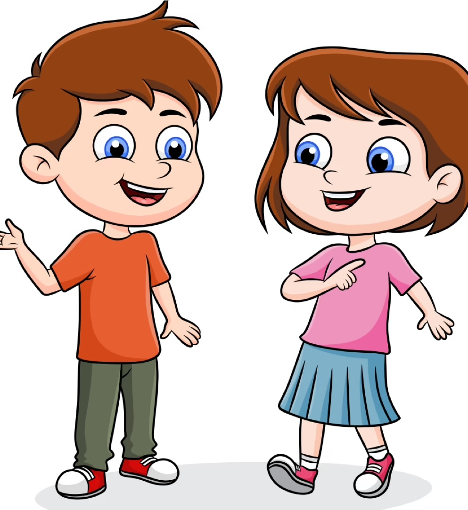

Every child develops language at their own pace — but there are typical patterns that help us understand what to expect and how to best support your child along the way (Johnston, 2010).

Use this guide to understand typical development. Remember — all children develop at their own pace. If you have concerns, speak with your child's doctor or an early childhood professional.
Before children learn to read, they need to understand that language is made up of sounds. This is called phonological awareness — and it develops naturally through play!
It is the ability to hear, identify and play with the sounds in language. It includes recognising rhymes, clapping syllables, noticing words with the same starting sound, and eventually blending and segmenting sounds. It develops long before children start reading (NSW Government, 2025).
Noticing that cat, hat and bat all sound alike. Develops from around 30 months through songs and rhyming books.
Breaking words into beats — el-e-phant has three beats. A great game for 3–4 year olds using clapping!
Noticing words that start with the same sound — "snake starts with sss!" Develops from around 36 months.
"Children begin to understand key literacy concepts and processes, such as the sounds of language, letter-sound relationships, concepts of print and the ways that texts are structured."
AGDE (2022, p. 60)
Now you know what to expect — find out the simple everyday things you can do to support your child's language at home.
At Home Tips →